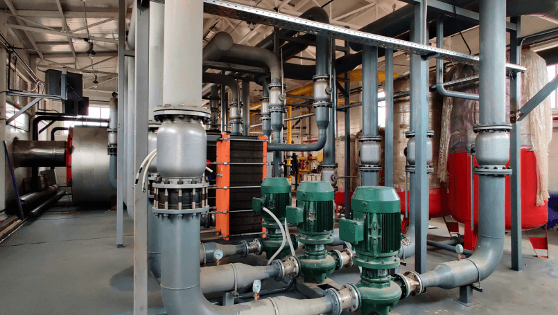

<h2 class="info__paragraph-title">Объект</h2>
<p class="info__paragraph">
  КОТЕЛЬНАЯ В КВАРТАЛЕ 34
  жилой район «Затон-Восточный»
  г. Уфа
</p>

<h2 class="info__paragraph-title">Оборудование</h2>
<ul class="bem__list info__list info__paragraph">
  <li>Пластинчатый теплообменник <span class="span_color_orange">ТИ82-201</span></li>
  <li>Мощность: 17500 кВт</li>
</ul>